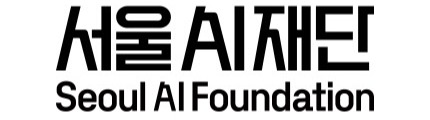
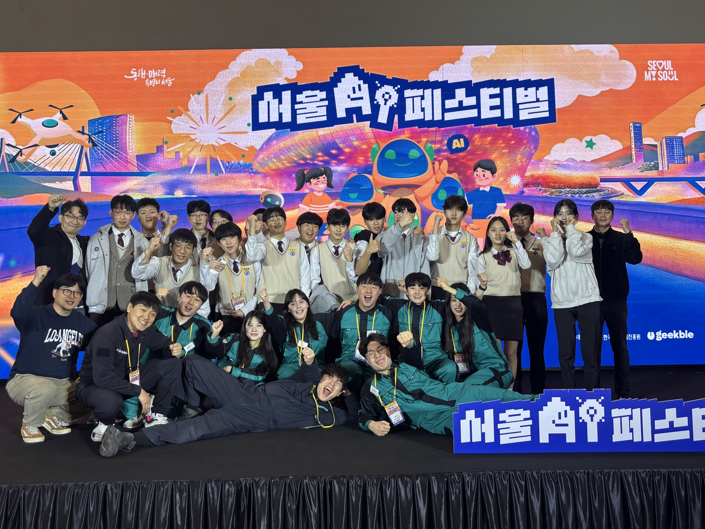

행사
서울 AI 페스티벌은 AI 기술과 시민 경험을 연결하는 행사입니다. 현장에서는 경진대회, 참여 기업, 솔루션 전시, 체험 부스가 함께 운영됐고, AI 엉뚱과학존은 관람객이 과학과 메이킹을 가볍게 접할 수 있는 체험형 존으로 구성됐습니다.
Seoul AI Festival · 2026
서울시와 서울AI재단이 함께한 서울 AI 페스티벌에서 학생 협업형 AI 체험 부스의 전시, 홍보, 현장 운영을 연결했습니다.


서울 AI 페스티벌 2026 현장 프로젝트
전시 구성, 홍보, 체험 운영 동선 관리
학생들과 함께 AI 엉뚱과학존 운영
Context
서울 AI 페스티벌은 AI 기술과 시민 경험을 연결하는 행사입니다. 현장에서는 경진대회, 참여 기업, 솔루션 전시, 체험 부스가 함께 운영됐고, AI 엉뚱과학존은 관람객이 과학과 메이킹을 가볍게 접할 수 있는 체험형 존으로 구성됐습니다.
PDF 자료에 정리된 콘텐츠를 단순 전시물로 두지 않고, 관람객이 멈춰 보고 질문하고 참여할 수 있는 형태로 풀어내는 것이 핵심이었습니다. 학생 운영진과 함께 현장에서 바로 설명 가능한 흐름으로 정리했습니다.
What I Managed
부스는 자료만 좋아도 굴러가지 않고, 운영자만 많아도 전달력이 떨어집니다. 관람객이 들어오고, 보고, 묻고, 체험하고, 다음 공간으로 넘어가는 흐름이 끊기지 않도록 현장 기준으로 계속 조정했습니다.
Outcome
자료 중심 콘텐츠를 현장에서 설명 가능한 전시 흐름으로 바꿨습니다. 관람객이 AI와 메이킹을 어렵게 느끼지 않도록, 질문과 반응을 기준으로 설명 밀도를 조정했습니다.
학생들과 역할을 나누고 현장 리듬을 맞추며 부스 운영을 안정화했습니다. 결과적으로 과학, AI, 만들기 활동에 대한 호기심을 끌어내는 체험형 존으로 운영됐습니다.

Event · Education · AI Experience